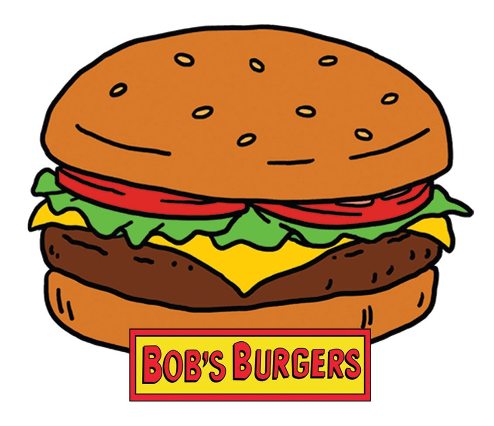

"Bob's Burgers" is a beloved animated sitcom following the Belcher family, who own and operate a burger restaurant in the fictional town of Seymour's Bay, navigating the chaos of family life and business struggles with humor and heart.
Bob's Burgers Fan Page
